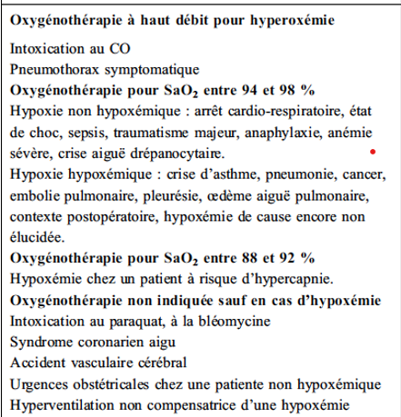
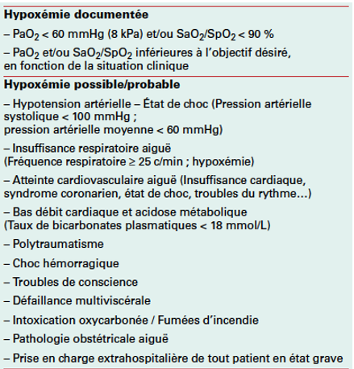

L'oxygénation est le processus physiologique par lequel l'oxygène est introduit dans le corps et distribué à travers le système circulatoire pour être transporté vers les tissus et organes, où il est utilisé dans les processus métaboliques pour produire de l'énergie. C'est un élément fondamental du métabolisme cellulaire et de la survie des organismes aérobies, permettant de maintenir les fonctions cellulaires normales et de soutenir la vie.
Parmi les dispositifs d'oxygénothérapie conventionnelle, il est classique de distinguer ceux permettant de délivrer de faibles débits variant de 0,5 à 6 L/min (lunettes et sondes nasales, masque à O2 simple) et ceux permettant de délivrer de plus hauts débits > 6 L/min (masques de type Venturi et masques à réservoir dits « à haute concentration » [MHC]).
L’élément essentiel de ce dispositif est constitué de deux petits embouts permettant de relier le système d’approvisionnement en oxygène aux narines du patient, elles sont surtout utilisées chez des patients stables lorsque les besoins en O2 sont faibles ou modérés. Cette interface délivre de l’O2 pur à une concentration imprévisible et faible du fait de l’inhalation concomitante de l’air ambiant (en général, FiO2 inférieure à 40 %). Son utilisation n’est pas recommandée pour des débits supérieurs à 5 L/min. Il s’agit d’un dispositif confortable pour le patient. Les lunettesnasales libèrent la sphère oropharyngée et sont compatibles avec l’alimentation et la conversation.
Il s’agit d’un petit tuyau souple introduit profondément dans une narine et devant arriver jusqu’au pharynx. Leur utilisation est liée à un risque de cathétérisassions de l’œsophage avec insufflation gastrique (risque potentiel de rupture gastrique en cas d’utilisation de débits élevés) en cas d’introduction trop profonde Les sondes nasales doivent rester réservées à l’administration de débits faibles d’oxygène, dans des cas particuliers.
Le masque facial simple couvre la bouche et le nez. Il contient un volume variant de 100 à 300 mL en fonction des modèles. L’O2 inhalé par le patient est dilué avec l’air ambiant provenant des orifices expiratoires. La FiO2 est imprévisible et dépend de la ventilation-minute du patient, du débit d’O2 utilisé et de l’étanchéité du masque. Il expose aux mêmes inconforts que les lunettes nasales et de plus prive le patient des fonctions oropharyngées. Il n’est pas recommandé de l’utiliser pour des débits d’O2 inférieurs à 5 L/min en raison du risque de ré-inhalation du CO2 expiré lorsque l’espace mort du masque n’est pas suffisamment renouvelé par l’O2 administré.
Ce système permet en théorie l’administration d’oxygène à une FIO2 précise. La partie supérieure se présente comme un masque classique, mais le raccordement à l’oxygène s’effectue par une chaussette sur laquelle s’adaptent des embouts perforés de couleurs différentes, ou une molette graduée, qui vont déterminer la FIO2 par une calibration de la fuite à partir du débit administré. La FiO2 peut varier de 24 à 60 % suivant le type de valve utilisé. Le phénomène de ré- inhalation est nul mais lors de l’hyperventilation, la FiO2 obtenue peut être moins importante que la FiO2 prédite.
Le dispositif est composé d’un sac réservoir alimenté par l’O2 pur. Ce réservoir nécessite l’administration d’un débit minimum d’O2 pour être gonflé en permanence. Suivant la ventilation du patient, le débit peut se situer entre 10 et 15 L/min. Le masque est équipé de trois valves unidirectionnelles. La première située entre le réservoir à O2 et le masque autorise l’inhalation d’O2 mais empêche l’expiration vers le réservoir. Les deux suivantes, situées sur les orifices expiratoires permettent l’expiration hors du masque en empêchant l’issue d’air ambiant pendant l’inspiration. Ce système permet donc d’obtenir des FiO2 élevées sans phénomène de ré-inhalation si le débit d’O2 est suffisant. En pratique, la FiO2 obtenue est au mieux de l’ordre de 65 %. Pour diminuer la FiO2, il est possible de retirer une ou deux valves expiratoires, tout en maintenant le sac réservoir gonflé. L’O2 pur est ainsi dilué avec l’air ambiant. Le masque à haute concentration permet classiquement d’obtenir une FiO2 proche de 90 % lorsque qu’un débit suffisant en O2 est utilisé et que le masque est étroitement fixé sur la face du patient.
L’oxygénothérapie est indiquée en traitement de l’hypoxie et de l’hypoxémie, ou chez les patients à risque de développer une hypoxie. Le recours à l’oxygénothérapie doit cependant être envisagé avant la mise en évidence ou la confirmation de l’hypoxémie. En cas de troubles de conscience, de grande instabilité hémodynamique, ou si le patient n’est plus capable de maintenir une ventilation alvéolaire efficace, il faut préférer la ventilation mécanique afin de corriger l’hypoxémie/hypoxie.
 L'oxygène, comme tout médicament, peut être potentiellement néfaste et doit répondre à une utilisation rigoureuse. Plusieurs situations cliniques sont en effet à risque d'effets secondaires lorsque l'oxygénothérapie est mal utilisée.
L'effet secondaire le plus reconnu est la survenue ou l'aggravation d'une hypercapnie, notamment sur terrain d'insuffisance respiratoire chronique (IRC) lorsqu'on utilise des débits d'O2 relativement élevés, voire chez les sujets âgés même en l'absence d'IRC sous-jacente. La correction d'une hypoxémie doit toujours être privilégiée en pratique clinique car beaucoup plus à risque que l'hypercapnie.
Les niveaux élevés de FiO2 ont pour conséquence un risque potentiel d'hyperoxie. Il a ainsi été suggéré que cette hyperoxie pouvait être responsable de :
• Lésions pulmonaires directes associant une inflammation locale, une augmentation de la perméabilité capillaire et de l’eau pulmonaire extravasculaire.
• Les lésions tissulaires suite à une atteinte directe par les radicaux libres de l’O2 en cas d'administration prolongée de FiO2 > 90 % plus de 4 jours ou > 50 % plus de 10 jours.
• Atélectasie dite de résorption ou de dénitrogénation.
• Vasoconstriction coronaire et systémique.
• Vasoconstriction cérébrale et une augmentation des lésions cérébrales d’ischémie- reperfusion cérébrale au décours d’un arrêt cardiaque.
Enfin, il a été montré que l’administration d’O2 de façon systématique à des patients non hypoxémiques atteints d’accidents vasculaires cérébraux d’importance modérée à moyenne pouvait aggraver leur pronostic et n’était pas recommandée.
Ces données justifient malgré tout de monitorer son administration par la surveillance de la SpO2, afin de limiter l’administration inutile de niveaux d’oxygène élevés, injustifiés par l’état clinique du patient.
• Les incendies et les brûlures représentent l’essentiel des autres complications. Ils concernent surtout les patients poursuivant une intoxication tabagique pendant l’oxygénothérapie.
• La contamination bactérienne des dispositifs d’humidification, suite à l’utilisation d’eau du robinet dans des barboteurs à usage multiple
• Les lésions muqueuses liées à la sécheresse des sécrétions
• Dilatation aiguë de l’estomac, avec quelques cas rapportés de rupture gastrique (décrits au cours de manœuvres de réanimation, en utilisant des sondes nasales à oxygène à des débits élevés).
Bien qu’il n’existe aucune contre-indication formelle à l’oxygénothérapie, lors de sa mise en route, la survenue potentielle d’effets secondaires même limités, doit en faire protocoler l’administration et la surveillance au sein d’une institution ou d’un service. Lorsque l’on administre à un patient de l’oxygène à l’hôpital, celui-ci est le plus souvent délivré grâce à un circuit de distribution centralisé et pressurisé (de l’ordre de 3,5 bar), à partir de sources d’oxygène liquide.
L’objectif de l’oxygénation est d’obtenir une saturation artérielle en oxygène (SaO2) ≥90%, dans des conditions normales de pH et de température. Selon la courbe de dissociation de l’oxyhémoglobine, ce niveau de saturation correspond à une PaO2 de 60 mmHg. Cet objectif doit être la priorité du clinicien, y compris chez le patient hypercapnique à l’admission, que cette hypercapnie soit aiguë (par épuisement respiratoire) ou chronique (cas du patient insuffisant respiratoire chronique).
Dans l’IRA, une fois l’objectif de SaO2 atteint, à l’aide d’un haut débit initial (8-15 l/min), on pourra diminuer les niveaux d’oxygène administrés en utilisant les différents dispositifs à notre disposition : masques Venturi à FIO2 variable (FIO2 théorique, de 24 à 60 %), masques à administration directe d’oxygène, voire lunettes pour les débits les plus faibles Dans l’IRC, le débit doit être ajusté sous contrôle des gaz du sang pour atteindre une PaO2 d’au moins 60 mmHg et la majoration de l’hypercapnie respectée si elle n’induit pas de retentissement clinique.
• Matériel d'administration :
o Lunettes à oxygène
o Sonde nasale à oxygène.
o Masque à oxygène.
o Masque à haute concentration en oxygène. Autres (masque venturi à oxygène, etc.).
• Système d'oxygénation :
o Source d'oxygène : Prise murale d'oxygène ou bouteille à oxygène.
o Débit-litre gradué de 0 à 15 l/min.
o Adaptateur pour prise murale (doit être à disposition dans la chambre)
o Matériel de branchement : tubulure, rallonges ou raccords selon la situation.
o Raccord couleur qui définit le pourcentage du mélange air / O2et (Masque Venturi)
o Humidificateur (Barboteur rempli d’eau stérile)
1. Installation de l’humidificateur
2. Monter le système
3. Connecter directement le tube d’O2 au moyen de la rallonge au système
4. Se frictionner les mains avec la solution hydro alcoolique
5. Installer les lunettes ou le masque sur le patient
6. Régler le débit selon la prescription médicale
Lorsque l’on doit effectuer un transport avec oxygène, utiliser une bouteille munie d’un raccord permettant de brancher directement le masque ou les lunettes sur la bouteille.
Dans l’IRA, il faut systématiquement prendre en compte de façon au moins quotidienne, et idéalement toutes les 4 heures à la phase aiguë :
• La saturation pulsée en oxygène (SpO2) : Il faut que l’objectif de saturation (SpO2 > 90 %) soit atteint ;
• La fréquence respiratoire ;
• La pression artérielle ;
• Le niveau de conscience du patient.
La fréquence ultérieure de cette surveillance est à adapter en fonction de l’état clinique du patient, mais devra au moins être quotidienne tant que l’oxygène continuera d’être administré.
Chez le patient IRC, en plus de la surveillance clinique visant à rechercher des signes évoquant de l’hypercapnie, une première gazométrie de contrôle doit être réalisée dans les 2 heures suivant l’introduction de l’oxygénothérapie de longue durée. Par la suite, les gaz du sang et l’hématocrite seront contrôlés 2 fois par an lors des consultations spécialisées. Une surveillance technique des appareillages à domicile complète la surveillance.
L’oxygénothérapie sera interrompue lorsque l’hématose sera satisfaisante en air ambiant (PaO2 > 60 mmHg ; SaO2 /SpO2 > 90 %). Chez certains patients avec une hématose satisfaisante, l’oxygénothérapie sera toutefois poursuivie jusqu’à stabilisation des fonctions vitales et de l’oxygénation tissulaire. Dans le cadre de l’IRC, la mise en route d’une OLD est synonyme de traitement à vie, quel que soit ultérieurement le niveau de PaO2 en air ambiant. Le débit est adapté de manière à obtenir une PaO2 > 60 mmHg ou SpO2 > 90-92 %, soit en général un débit de 1 à 3 l/min. La durée est variable, mais doit être supérieure à 15 heures par jour, afin de conserver l’effet de l’OLD sur l’espérance de vie de ces patients.